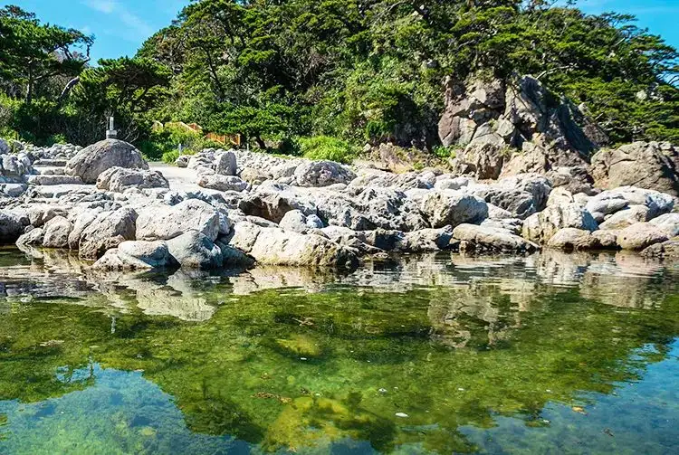

Niijima, Tokyo: things to do, food and stays
Niijima · Tokyo
Niijima
Highlighted on the Tokyo map.

Sights
Dining
Sakae Zushi
栄寿司

Seafood restaurant in Niijima, Tokyo.
Kajiya Bakery
かじやベーカリー

Sweets and bakery shop in Niijima, Tokyo.
Shima Shokudo Margaux
島食堂 マルゴー

Japanese restaurant in Niijima, Tokyo.
Yakitori Daisan
焼鳥大三

Meat restaurant in Niijima, Tokyo.
Rest House
レストハウス

Seafood restaurant in Niijima, Tokyo.
POOL

Cafe in Niijima, Tokyo.
Ikemura Shoten
池村商店

Sweets and bakery shop in Niijima, Tokyo.
Sun Valley
サンバレー

Chinese or Asian restaurant in Niijima, Tokyo.
Yuu Hama Tei
夕浜亭

Seafood restaurant in Niijima, Tokyo.
Beniya
紅谷

Sweets and bakery shop in Niijima, Tokyo.
Shima Yado Watanabe
島宿 わたなべ

Restaurant in Niijima, Tokyo.
Mikasa
みかさ

Japanese restaurant in Niijima, Tokyo.
Restaurant Daishi
レストラン 大師

Chinese or Asian restaurant in Niijima, Tokyo.
Shima cafe 963
島cafe 963

Cafe in Niijima, Tokyo.
Nihonbashi
日本橋

Izakaya or bar in Niijima, Tokyo.
Ipponmatsu Shokudo
一本松食堂

Noodle restaurant in Niijima, Tokyo.
Ikemura Seika
池村製菓

Sweets and bakery shop in Niijima, Tokyo.
Etcetera Cafe
エトセトラカフェ

Cafe in Niijima, Tokyo.
Yoshida Ya
吉田屋

Restaurant in Niijima, Tokyo.
Okuyama
おくやま

Restaurant in Niijima, Tokyo.
Nagomi Dokoro Sunshine
和み処 サンシャイン

Seafood restaurant in Niijima, Tokyo.
NINZ COFFEE

Cafe in Niijima, Tokyo.
Nomikui Dokoro Emujei
呑み食い処 えむじぇい

Japanese restaurant in Niijima, Tokyo.
Tori Tetsu
とりてつ

Meat restaurant in Niijima, Tokyo.
Minshuku Kaneyama
民宿かねやま

Restaurant in Niijima, Tokyo.
Suzu Toyo
鈴豊

Restaurant in Niijima, Tokyo.
Kikusui Ryokan
菊水旅館

Restaurant in Niijima, Tokyo.
Jigohei
治五平

Restaurant in Niijima, Tokyo.
La Mer Shikine
ラ・メール シキネ

Restaurant in Niijima, Tokyo.
Niijima Store
新島ストア

Restaurant in Niijima, Tokyo.
Oonuma
大沼

Seafood restaurant in Niijima, Tokyo.
Umeyo
梅与

Restaurant in Niijima, Tokyo.
Ryokan Oonoya
旅館 大野屋

Restaurant in Niijima, Tokyo.
cafe BENI
CAFE BENI

Cafe in Niijima, Tokyo.
Kokoro
こころ

European restaurant in Niijima, Tokyo.
Kiroku
きろく

Restaurant in Niijima, Tokyo.